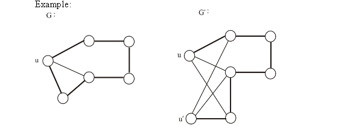
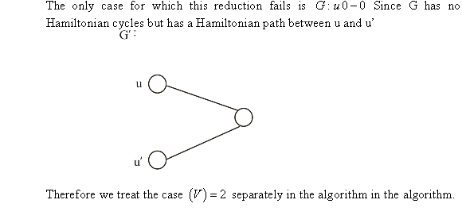

In the graphs shown above, it can be seen that sub graph of graph S is isomorphic because it has the existence of the graph G and the sub graph is not.
• Sub-graph Isomorphism is a NP-Complete problem.
• For this decision problem to be classified as NP-Complete problem, it must also satisfy both NP and NP-Hard category.
• To prove this problem as NP-Complete problem, the following two things have to be proved:
i. The decision problem should be in NP category (NP category)
ii. Every problem in NP must be reducible to this decision problem in polynomial time (NP-hard category)
Proof that Sub-graph Isomorphism is in NP category:
NP is a set of decision problems such that the solutions of these problems can be verified in polynomial time.
Given a description of graph sub-graph S1 and the mapping between the vertices of the sub-graph S1 and the vertices of the graph G, it takes polynomial time to verify S1 is indeed isomorphic to the graph G.
The mapping describes which vertices of S1 correspond
to which vertices of G. This mapping is represented by the
function .
.
1. For each edge (u, v) of graph S, if it belongs to S1, then edge also belongs to graph G
2. Repeat this for each edge of graph S.
This requires traversing through all the edges of graph S, and then for each of these edges, matching is done with the set of vertices of S1 and G.
So, time complexity should be at most
This is same as for dense
graphs and  for sparse
graphs.
for sparse
graphs.
Thus, it can be seen that sub-graph isomorphism is verified in polynomial time.
Therefore, .
Proof that every problem in NP is reducible to Sub-graph Isomorphism decision problem (NP-Hard category):
All NP-complete problems belong to the NP category also. Clique problem is a known NP-complete problem. By definition, all NP problems are reducible to Clique problem. Thus, if Clique problem is reducible to the sub graph isomorphism problem, then the every NP category problem should also be reducible to the sub-graph isomorphism problem.
Clique Problem: It is a NP-complete decision problem in which the input is a single graph S and a number k, such that the question is to find out whether S contains a complete sub-graph with k vertices.
Reduction: Clique problem can be reduced to sub-graph isomorphism problem by the following steps:
1. Create G as a complete graph of k vertices.
2. CLIQUE (Graph, number) is given an input of S and k.
If this gives the answer as “yes”, then the graph S must be containing a sub-graph S1 such that the S1 is a k-clique. Since, G is already a k-clique. Therefore, this sub-graph is isomorphic.
The reduction requires having an instance of the CLIQUE which
accepts a graph and a number. The graph S is copied to it. Copying
a graph takes time
complexity. There needs to be graph G specified which must be a
complete graph. Writing a complete graph again takes a time
complexity of. Thus, the
whole reduction is done in polynomial time.
Since, clique problem is reducible to the sub graph isomorphism problem, so every NP category problem must also be reducible to the sub-graph isomorphism problem.
Since, it is proved that sub-graph isomorphism problem belongs to NP category and that all the NP category problems are reducible to sub-graph isomorphism problem, therefore, it is true that sub-graph isomorphism problem is a decision problem that is NP-complete.
The 0-1 integer programming problem will be proved as NP-complete by using the fact that 0-1 integer-programming problem.
Now, consider a CNF formula  that
contains
that
contains  variables
and
variables
and  clauses.
Now, construction the corresponding matrices
clauses.
Now, construction the corresponding matrices  and
and are as
follows:
are as
follows:
• First transform every clause into the inequality and,
• An expression and
 are
used to denote every literals depends whether it is a variable or
its negation which exists in the clause.
are
used to denote every literals depends whether it is a variable or
its negation which exists in the clause.
Now, consider the following examples:
Here, the CNF formula is given
as.
Then, the following will be exists:
Then from the above given CNF formula, matrix corresponds to
andare given
as:
and.
Consider the following reduction algorithm:
FREDUCTION ()
1. First performed checking whether the format of is in 3-CNF or not.
2. If the format is not in 3-CNF then return 
//for loop is used to iterate through 1 to m, where is the
clauses.
3. for k=1 to m
//Assign value zero to the variable NUM
4. NUM 0;
0;
5. for i=1 to m do
6. ;
7. for every literals do
8. if then
9. ;
10. else if then
11. ;
12. NUM++;
13. end if
14. end for
15. ;
16. end for
17. retrun
Use the algorithm in the above step to find the format of
.
Now, consider if the format of is not in
3-CNF then and the
system has no solution for.
• In this case, if there exists a truth assignment to in such way
that every clause is satisfiable then is said to
be satisfiable.
• Then, it is true if there exists the values 0, 1 assigned to variables in such way that.
Hence, form the above explanation it is proved that “integer programming problem is NP-complete”.
The subset-sum problem deals with finding out whether there exists a subset from the elements provided such that their sum is equal to a specific value.
Assume is the sequence of positive integers.
n is the number of elements in the set A.
Let the required sum of subsets be denoted by t such that t > 0.
Define for all and to calculate whether there is a subset with required sum or not.
The value of will be true only if there is subset of otherwise false.
So,
…… (1)
This being a Dynamic Programming algorithm, solving for smaller problems is done first and it is then used to solve the bigger problems.
From equation (1), the following is observed:
• will be true for all value of i
• will be false for all.
• For other values, it is true only if there is a subset of A1, A2, A3…. Ai-1 summing to j or j-Ai.
Thus, the term gives the final answer to the problem.
From the above algorithm, it is clear that the running time depends on two loops:
• The value  increases
from 0 to n.
increases
from 0 to n.
• The value j increases from 0 to t.
The second loop is contained within the first loop.
In such a scenario, the final time complexity becomes where n is the number of elements and t is the maximum element.
Time complexity if the target value t is in unary notation:
Let the number of bits required to represent the maximum number t is b.
In case of unary notation, the number of bits required to represent the numbers is at most equal to the greatest number which is t. This is because t is represented by t number of 1s.
So, number of bits required to represent the numbers is at most t. So, b is upper bounded by .
The final complexity becomes.
Thus, if the target value t is expressed in unary, then the subset-sum problem is solved in polynomial time.



Consider the following decision version of the longest simple cycle problem:
• LONGESTSIMPLECYCLE: for a
given integer  and an
undirected graph
and an
undirected graph , does
has
a simple cycle of length minimum.
, does
has
a simple cycle of length minimum.
• Now, to show LONGESTSIMPLECYCLE is NP-complete, first consider the following definition of HAMCYCLE.
• HAMCYCLE: For a
given undirected graph  does
consists a
Hamiltonian cycle.
does
consists a
Hamiltonian cycle.
LONGESTSIMPLECYCLE
 :
:
• Suppose an instance of LONGESTSIMPLECYCLE is denoted as. Now, consider the certificate y that consists a sequence of vertices.
• Now, simply scanning performed through the graph in
polynomial time to verify that y consists a cycle, length of
y is k of higher and no vertex in y appears
more than once.
HAMCYCLE LONGESTSIMPLECYCLE :
• An instance LONGESTSIMPLECYCLE is constructed from the instance of HAMCYCLE. It can be done in polynomial constant time as the instrumentation is trivial.
• Now, the graph consists a
Hamiltonian cycle, if its longest simple cycle length is equal
to .
It is correct because, if consists a
Hamiltonian cycle that cycle is a simple path, which consists a
length.
.
It is correct because, if consists a
Hamiltonian cycle that cycle is a simple path, which consists a
length.
• On the other hand, the length of the longest simple in
must be
strictly less thanif does not
consists a Hamiltonian cycle.
Hence, the LONGESTSIMPLECYCLE is NP-complete can be concluded from the above proofs.